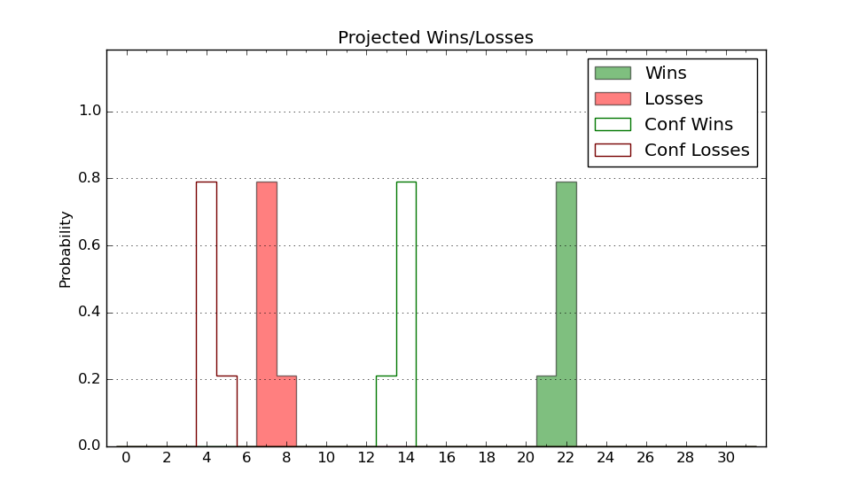

| Home | Game Probabilities | Conferences | Preseason Predictions | Odds Charts | NCAA Tournament |
| City: | Birmingham, Alabama | |
| Conference: | Conference USA (2nd)
| |
| Record: | 13-4 (Conf) 21-7 (Overall) | |
| Ratings: | Comp.: 15.0 (51st) Net: 15.0 (51st) Off: 111.6 (41st) Def: 96.6 (68th) SoR: 30.3 (67th) |
| Remaining | ||||||
|---|---|---|---|---|---|---|
| Date | Opponent | Win Prob | Pred. | |||
| 3/5 | Louisiana Tech (103) | 78.8% | W 79-70 | |||
| Previous | Game Score | |||||
| Date | Opponent | Win Prob | Result | Off | Def | Net |
| 11/9 | UNC Asheville (222) | 92.7% | W 102-77 | 26.2 | -16.4 | 9.9 |
| 11/12 | Morehead St. (120) | 83.7% | W 85-71 | 7.6 | -8.5 | -0.8 |
| 11/18 | @South Carolina (102) | 51.6% | L 63-66 | -13.1 | 8.6 | -4.5 |
| 11/21 | Alabama A&M (323) | 97.6% | W 86-41 | 2.3 | 22.8 | 25.1 |
| 11/25 | (N) New Mexico (154) | 80.2% | W 86-73 | 0.4 | 2.8 | 3.2 |
| 11/26 | (N) San Francisco (27) | 41.1% | L 61-63 | -11.4 | 12.6 | 1.1 |
| 12/1 | East Tennessee St. (169) | 89.2% | W 70-56 | -14.5 | 12.9 | -1.6 |
| 12/4 | @Saint Louis (61) | 38.3% | W 77-72 | 12.2 | -3.5 | 8.7 |
| 12/14 | Grambling St. (306) | 96.7% | W 79-61 | -12.5 | 5.1 | -7.4 |
| 12/18 | West Virginia (78) | 72.0% | L 59-65 | -18.7 | -1.2 | -20.0 |
| 12/22 | Mississippi Valley St. (355) | 99.2% | W 100-58 | -3.0 | 6.3 | 3.3 |
| 12/30 | UTEP (175) | 89.6% | W 75-62 | -4.1 | -0.4 | -4.6 |
| 1/1 | UTSA (327) | 97.8% | W 87-59 | 9.2 | -1.6 | 7.6 |
| 1/6 | @North Texas (47) | 33.8% | W 69-63 | 19.7 | -0.1 | 19.7 |
| 1/8 | @Rice (199) | 75.4% | L 80-85 | -7.1 | -15.9 | -23.0 |
| 1/13 | FIU (267) | 95.2% | W 84-56 | 8.8 | 6.1 | 14.9 |
| 1/15 | Florida Atlantic (118) | 83.5% | W 76-65 | -2.6 | 5.1 | 2.4 |
| 1/22 | @Louisiana Tech (103) | 52.1% | W 83-76 | 5.8 | 4.9 | 10.7 |
| 1/27 | @Western Kentucky (116) | 59.2% | W 68-65 | -10.4 | 14.2 | 3.7 |
| 1/29 | @Marshall (240) | 82.0% | L 81-84 | -3.7 | -16.5 | -20.2 |
| 2/5 | Middle Tennessee (108) | 80.9% | W 97-75 | 19.5 | -7.3 | 12.3 |
| 2/10 | Southern Miss (341) | 98.3% | W 84-63 | 2.2 | -12.3 | -10.2 |
| 2/13 | @Old Dominion (191) | 74.1% | L 72-81 | -2.7 | -24.8 | -27.4 |
| 2/17 | Rice (199) | 91.3% | W 92-68 | 11.9 | -3.3 | 8.6 |
| 2/19 | North Texas (47) | 63.5% | L 57-58 | -5.0 | -0.7 | -5.8 |
| 2/24 | @UTSA (327) | 92.8% | W 68-56 | -12.9 | 7.9 | -4.9 |
| 2/26 | @UTEP (175) | 71.6% | W 69-66 | -0.5 | -4.6 | -5.1 |
| 3/2 | @Southern Miss (341) | 94.5% | W 81-68 | -6.0 | -3.3 | -9.3 |
| Stats & Trends | |||||
|---|---|---|---|---|---|
| Current | Day | Week | Month | Season | |
| Composite | 15.0 | +0.1 | -0.5 | -1.1 | +2.3 |
| Comp Rank | 51 | -- | -5 | -10 | +37 |
| Net Efficiency | 15.0 | +0.1 | -0.5 | -1.3 | -- |
| Net Rank | 51 | -- | -5 | -11 | -- |
| Off Efficiency | 111.6 | +0.1 | -0.2 | +0.7 | -- |
| Off Rank | 41 | +2 | -- | +10 | -- |
| Def Efficiency | 96.6 | -0.1 | -0.4 | -2.0 | -- |
| Def Rank | 68 | -1 | -2 | -17 | -- |
| SoS Rank | 205 | +1 | -3 | +7 | -- |
| Exp. Wins | 21.8 | +0.0 | +0.3 | -0.8 | +1.8 |
| Exp. Conf Wins | 13.8 | +0.0 | +0.3 | -0.8 | +1.2 |
| Conf Champ Prob | 0.0 | -- | -0.2 | -56.9 | -31.0 |

| Advanced Stats | ||
|---|---|---|
| Stat | Value | Rank |
| Off Eff FG % | 0.519 | 107 |
| Off Ast Ratio | 0.134 | 220 |
| Off ORB% | 0.326 | 63 |
| Off TO Rate | 0.134 | 24 |
| Off FT Ratio | 0.267 | 280 |
| Def Eff FG % | 0.491 | 139 |
| Def Ast Ratio | 0.127 | 70 |
| Def ORB% | 0.271 | 138 |
| Def TO Rate | 0.203 | 18 |
| Def FT Ratio | 0.323 | 233 |